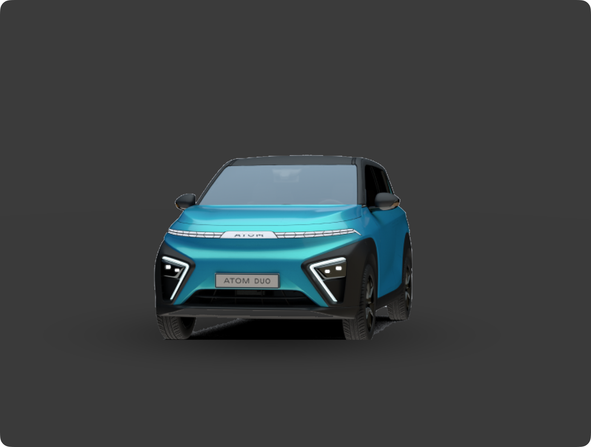
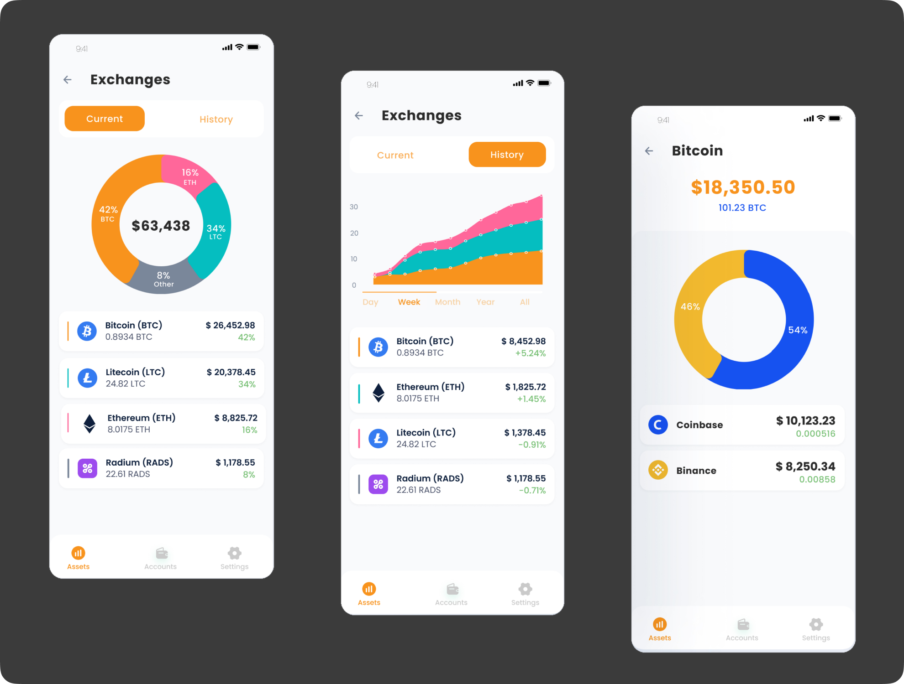
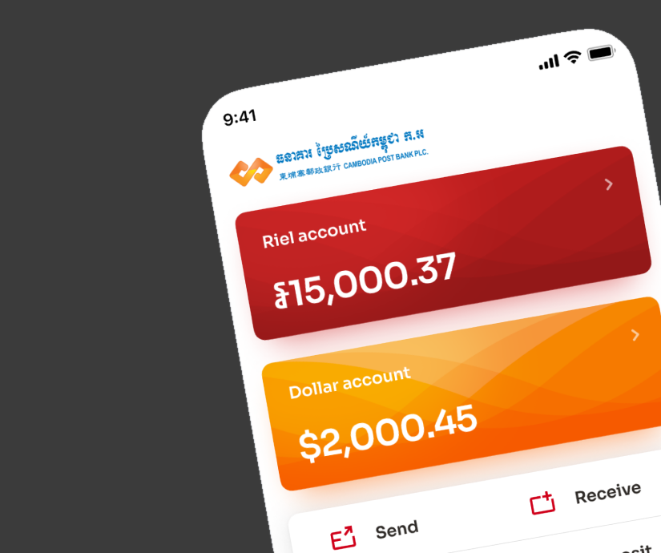
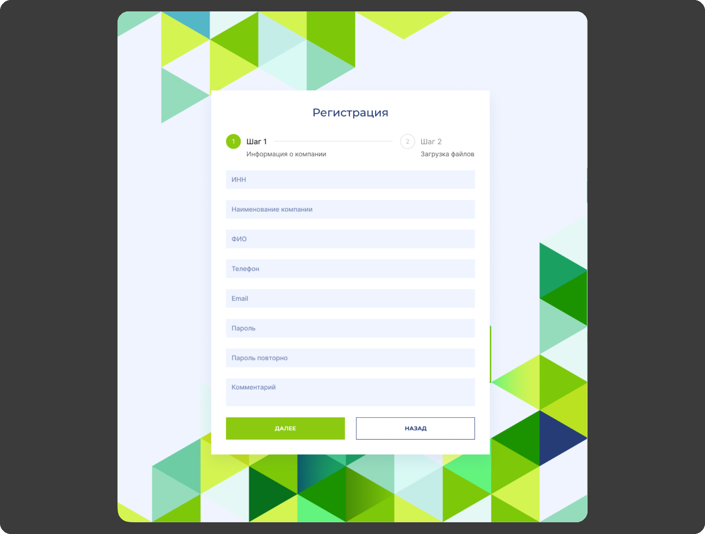

Понять контекст
Разобраться в пользователях, целях продукта, ограничениях и критериях успеха.
Проектирую цифровые продукты для банковской и инвестиционной сфер. Соединяю пользовательские задачи, продуктовую логику и цельные интерфейсы.
Финтех · Банкинг · Мобильность
Четыре продукта — от банковских сценариев и финансовых активов до управления электромобилем.

Мобильность · Мобильное приложение
Спроектировал ключевые сценарии владения и обслуживания: доступ к автомобилю, зарядку, профиль и сервис.
Открыть кейс
Финтех · Продукт с нуля
Спроектировал архитектуру и часть MVP для обзора банковских карт, криптобирж и кошельков.
Открыть кейс
Банкинг · Редизайн
Исследовал банковские сценарии, проверил гипотезы и обновил экраны и библиотеку компонентов.
Открыть кейс
B2B · Веб-сервис
Спроектировал кабинет сотрудника: заявки на банковские продукты и основные рабочие сценарии.
Открыть кейсСильный интерфейс начинается не с пикселей, а с правильного вопроса, ясной структуры и внимания к тому, как люди действительно пользуются продуктом.
Разобраться в пользователях, целях продукта, ограничениях и критериях успеха.
Уточнить сценарии, расставить приоритеты и превратить сложное в понятную структуру.
Прототипировать, обсуждать с командой и искать слабые места до разработки.
Сделать интерфейс цельным, доступным для развития и последовательным в деталях.
Мой опыт связан с банковскими и инвестиционными технологиями. Работал с командами Dex, Soramitsu и Atom.
Веду работу от исследования и пользовательских сценариев до прототипов, финальных интерфейсов и дизайн-систем.
Мой подход — AI Native: ИИ — естественная часть проектного процесса, а в центре остаются задачи людей и логика продукта.
По вопросам сотрудничества и новых проектов — напишите напрямую.
Написать на email